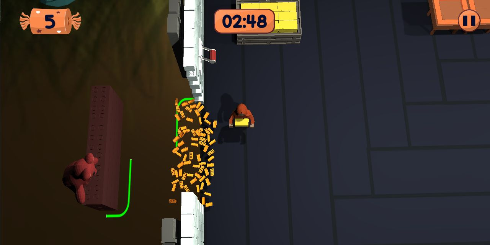

Annie's Sweet Nightmares é um jogo casual cooperativo inspirado em jogos de gerenciamento. Os jogadores precisam proteger a casa de Annie utilizando diferentes armadilhas contra ursos.
A dinâmica gira em torno de observar as ameaças e escolher como responder a elas. A cooperação ajuda a organizar as ações necessárias para manter a casa protegida.
As armadilhas e os elementos da casa dão variedade às decisões dos jogadores e ajudam a construir o ritmo da experiência.
A galeria reúne imagens de personagens, cenários e objetos que compõem o universo do jogo.


2 Notas sobre o projeto
A proteção da casa organiza o objetivo principal e dá contexto às decisões dos jogadores.
A cooperação e o uso das armadilhas conectam os elementos de gerenciamento à ação do jogo.
Deixe um comentário